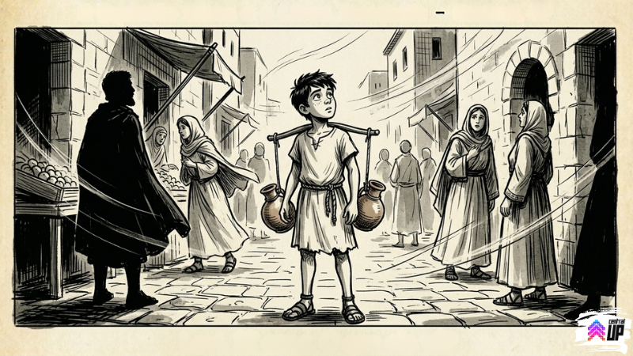
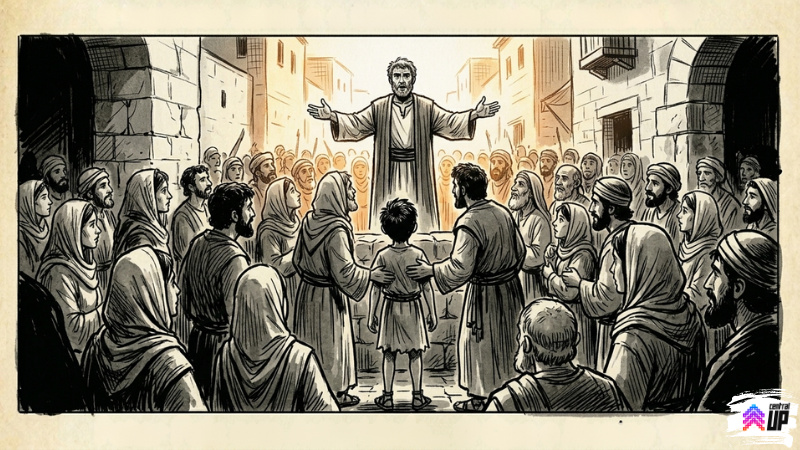

Este devocional abre na sexta-feira, 10/04!
Este devocional abre na sexta-feira, 10/04!
Levi não estava esperando nada. E foi exatamente por isso que pegou ele de surpresa.
Cinquenta dias depois da Páscoa.
Levi acordou cedo, pegou as jarras e foi trabalhar. Igual todo dia. O sol de Jerusalém naquela manhã era o mesmo sol de sempre, o mercado fazia o mesmo barulho de sempre, o cheiro do bairro dos curtidores quando ele passou por lá era o mesmo cheiro de sempre.
Ele encostou a mão na porta da casa. Hábito que tinha virado rotina sem ele perceber.
Levi tirou a mão, ajeitou as jarras nos ombros e continuou.
Foi encher as jarras no poço de Siloé. Foi fazer a primeira entrega do dia, um comerciante de tecidos perto do portão sul que sempre reclamava que a água estava morna demais. A água não estava morna. O comerciante só gostava de reclamar.
Foi na segunda entrega que aconteceu.
Levi estava no meio de uma rua larga quando o vento veio.
Não era uma brisa. Não era o tipo de vento que dobra galhos e levanta poeira e passa. Era um barulho que ele não sabia que existia, um rugido vindo de dentro dos muros da cidade, como se o próprio ar tivesse mudado de ideia sobre o que queria ser.
Ele parou. Todas as pessoas na rua pararam. Um burro amarrado num poste ficou completamente quieto, e burros não ficam completamente quietos.
O barulho durou alguns segundos. E depois parou.
E aí começaram as vozes.

Levi largou as jarras.
Não foi uma decisão. Foi o corpo indo antes da cabeça. As jarras bateram no chão, água por todo lado, e ele já estava correndo na direção do barulho sem ter parado pra pensar se era boa ideia.
A multidão estava se acumulando numa praça aberta. Levi chegou sem fôlego, espremeu entre as pessoas, chegou na frente o suficiente pra ver.
Os discípulos estavam lá. Todos eles. De pé, no meio da praça, falando em voz alta com aquela energia que Levi nunca tinha visto em ninguém. Falando em línguas que as pessoas ao redor reconheciam como as próprias línguas delas, vindas de gente que não devia saber essas línguas.
Alguém ao lado de Levi sussurrou: "Estão bêbados."
Levi olhou pro rosto deles. Não estavam bêbados. Bêbado ele já tinha visto. Aquilo era outra coisa. Era parecido com o rosto de Tomé na esquina, mas multiplicado por doze, amplificado, transbordando.
E então Pedro subiu num lugar alto e começou a falar.
A voz de Pedro não era a voz de um homem com medo. Dois meses atrás, esse mesmo homem tinha negado conhecer Jesus três vezes numa noite. Agora estava de pé no meio de Jerusalém, falando pra centenas de pessoas, sem gaguejar uma vez.
Levi ouviu o nome.
Jesus.
Quarta vez em cinquenta dias. Mas dessa vez não era cochichado com medo num mercado. Não era investigado numa viela. Não era contado em voz baixa num pátio. Era proclamado em voz alta no meio da cidade, sem desculpa, sem hesitação, diante de centenas de pessoas que poderiam reagir muito mal a esse nome.
Pedro continuou. Falou de Davi. Falou de profecias. Falou da ressurreição com a certeza de quem viu com os próprios olhos, porque tinha visto com os próprios olhos.
E no final disse uma coisa que parou Levi no lugar:
A multidão ficou em silêncio.
Levi ficou em silêncio.
Alguém na multidão perguntou, com uma voz que soava como a voz de todo mundo ao mesmo tempo:
"O que devemos fazer?"
E Pedro respondeu:
Levi não entendeu tudo. Não sabia o que era batismo direito. Não entendia ainda o que era o Espírito Santo.
Mas entendeu uma coisa.
Aquela coisa enorme que Tomé tinha dito que estava começando, sem conseguir explicar o que era?
Era isso.
Estava começando agora. Na sua frente. E ele não estava do lado de fora.

Central UP — IEQ Central Londrina
Desenvolvido por Pr. Eduardo